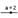

Se
pueden crear números usando la Barra de
Entrada. Si se anota un número (por ejemplo; 3), GeoGebra le asigna una le asigna como
nombre una letra minúscula. Si se prefiere asignarle un nombre determinado, es
preciso anotarlo seguido del signo igual que antecederá al valor numérico (por
ejemplo., para crear un decimal r se anota r = 5.32).
Atención: En GeoGebra, los número y ángulos usan
el punto ‘.’ como separador decimal.
También
puede emplearse la constante π y la de Euler e para expresiones y cálculos,
seleccionándolas en los menúes que se despliegan próximos a la Barra de Entrada o usando las teclas de atajo.
Atención:: Si la variable ‘e’ no está aún usándose como nombre de un objeto
ya existente, GeoGebra la reconocerá como la constante de Euler cuando se la incluya en una expresión.
Los
ángulos se ingresan en grados (°) o en radianes (rad). La constante π
es útil para los valores en radianes y puede también anotarse como pi
Atención: Se puede ingresar el símbolo de grados °
o el de pi, π usando las siguientes teclas de atajo:
·
Alt-O
(MacOS: Ctrl-O) para el símbolo de grados °
·
Alt-P
(MacOS: Ctrl-P) para el símbolo π
Ejemplo: Un ángulo α puede ingresarse en grados (α = 60) o radianes (α = pi/3).
Atención: GeoGebra realiza todos los cálculos
internos en radianes. El símbolo ° no es sino una constante para convertir
π/180 de grados a radianes.
Ejemplo: Si a
= 30 es un número, entonces α = a° convierte el número a a un ángulo α
= 30°, sin cambiar su valor. Al anotar b = α / °, el ángulo α vuelve a convertirse en el número b = 30, sin cambiar su valor.
Tanto
los números como los ángulos libres pueden exponerse como deslizadores
ajustables en la Vista Gráfica (ver herramienta
 Deslizador). Con las teclas-flecha se puede cambiar
el valor de números y ángulos, también en la en la Vista Algebraica (ver Animación
Manual).
Deslizador). Con las teclas-flecha se puede cambiar
el valor de números y ángulos, también en la en la Vista Algebraica (ver Animación
Manual).
Los números y los ángulos pueden quedar
limitados a un intervalo [mín, máx]
usando la pestaña ‘Deslizador’ de la Caja
de Diálogo de Propiedades (ver también herramienta  Deslizador).
Atención: Para los ángulos se puede especificar si pueden o no resultar cóncavos,
tildando o no la correspondiente casilla de la pestaña ‘Básico’ de la Caja de Diálogo de Propiedades.